The one with Seminars, Subjective Time, Public Clocks and Edward Hall
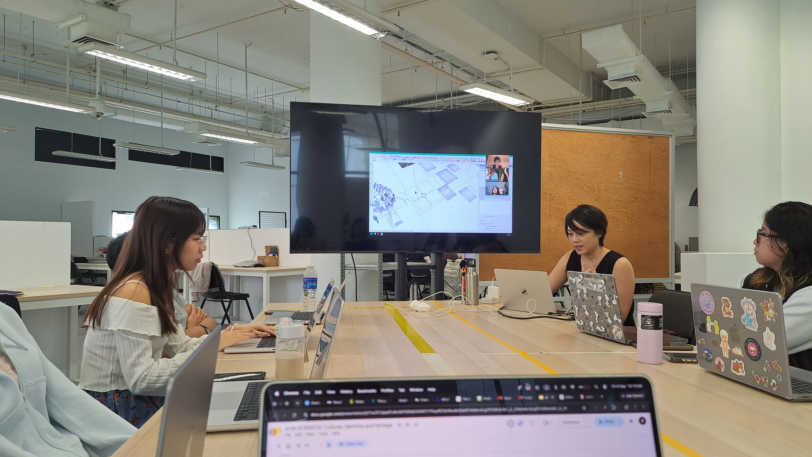
The Public Clocks of Singapore
While out and about at Toa Payoh (to take a picture of the SEAP Games HDB flats :) ), I noticed that there was a public clock which piqued my interest because it honestly feels like nobody uses it? I could be wrong though. But since there are so many people who wear their own watches and phones to tell the time, I found that it was so interesting to have a public clock installed.
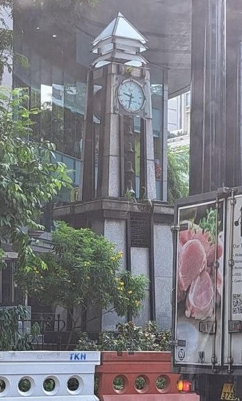
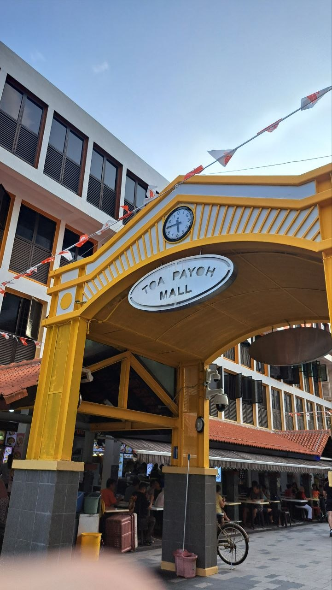
I started seeing public clocks, like it was a vision. I saw the Shaw Theatres Clock (right in front of Lido Cinemas) while on the way to school. Could this be a sign? I started researching more about Public Clocks in Singapore, and realised that we had a massive collection of public clocks, island-wide. This article on the many public clocks was really insightful.
Some of the beautiful clocks from the article. The article didn't really go into why these clocks were built, but its really impressive that the author went to seemingly every corner of Singapore to capture all of them. I realised that many of these clocks have bells, and really weird design choices like the weathervane, which while beautiful also strikes me as strange. I wonder if it works! Most of all, I wonder if people still use it, or if its mainly for decoration. Perhaps it would be worth a shot to dive deeper into the existence into these clocks?
Research Seminars
There were no dissertations classes this week, but we were asked to enroll into at least 2 seminars. I chose all 3 as I couldn't decide which to do...the more the merrier! For this week, I had critical journal with Shu Min and Case study with Vikas.
Seminar 01 Critical Journal
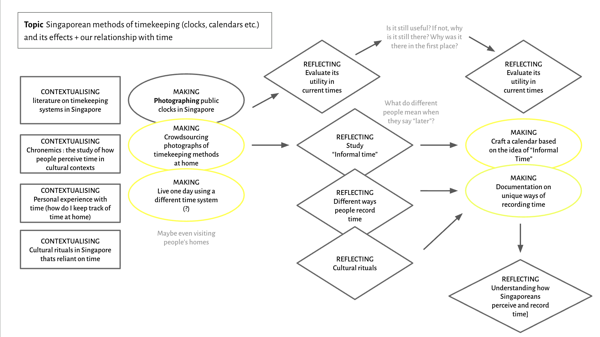
At its core, the critical journal is reflection-in-action. It is a way of producing new knowledge that reinforces a theory that you have read through proven studies. Even the act of observation is a form of making.
We then tried our hand at creating our own research plans. I was still finding my way for my topic, so it was definitely not the most concrete plan. At the same time, I do feel that this exercise forced me to think of different ways that I can carry out my research enquiry. From this exercise, I got the idea of living a day through an alternative clock system.
Some comments that I got on my research plan—there was a lot going on! Shu Min advised me to think of whether the execution connected back (answered to) the question I was investigating. Also, which timekeeping system am I focusing on? (How about both??) A way of making the making more manageable is also through breaking it down into smaller units e.g. instead of "making a calendar" (which sounds very daunting) it could be "making a day's routine" or something.
Seminar 02
Case Study
The case study research approach is pretty straightforward; its a focus on an "object of interest". When going through the case study approach, we should ask ourselves, "what exactly is it we're studying?" We worked on scoping our topics as well, which Vikas advised us to bound within place, time (time!). By place, he also advises us to look at a specific area of interest, not just the entire country, like a street or neighbourhood. Are we studying an individual (e.g. a designer? a person of a particular background?)
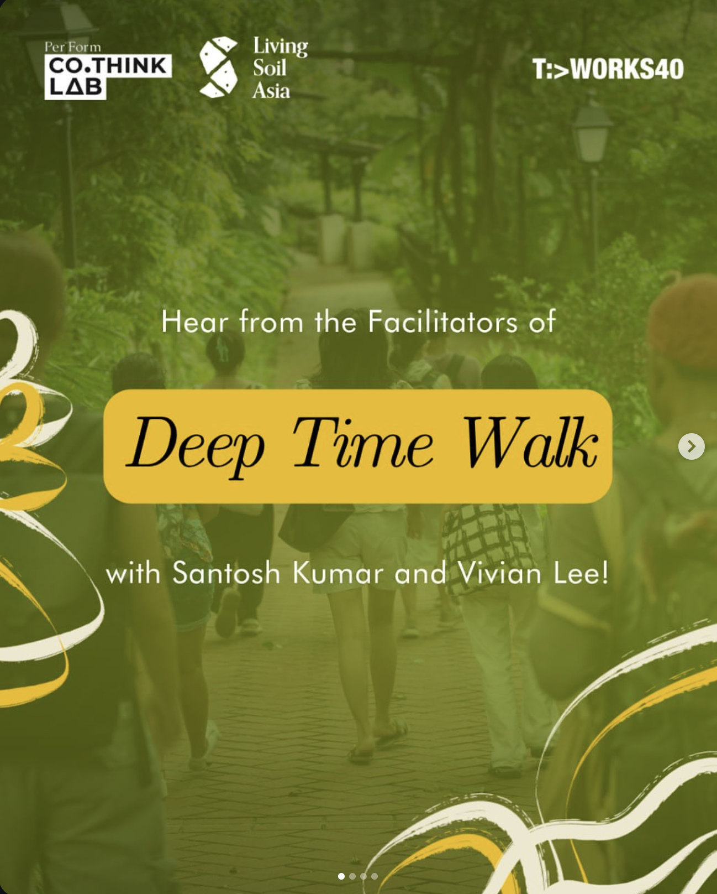
While talking to Vikas about our project topic, I told him about how people visualised differently and how that affected the way we felt and behaved. He advised me to focus on the sensation of time, and brought up an interesting walk that was held last year called the "Deep Time Walk". He also told me that it was alright to focus on Singapore, but particularly different age groups (who might feel time differently). He also said something about how Singapore doesn't exactly have seasons, we do, but that its not exactly seen—but anyway this would change how people perceived the way time flew in Singapore.
He mentioned other interesting topics like the circadian rhythms, Japanese microseasons and how Singapore's sense of time is also shaped by the agricultural products we consume. In many countries, the harvest often defined the season, especially what we call it. But in Singapore, everything is readily available.
I felt that this was really insightful for me, as I was also worrying about the people I wanted to involve, which was currently "everyone in Singapore" (not an ideal group! it had to be more specific, I thought!) So looking at different age groups was something interesting that I will consider. Thinking about how people perceived time was also very cool. Thank you Vikas!! ◝(ᵔᗜᵔ)◜
What should I gather?
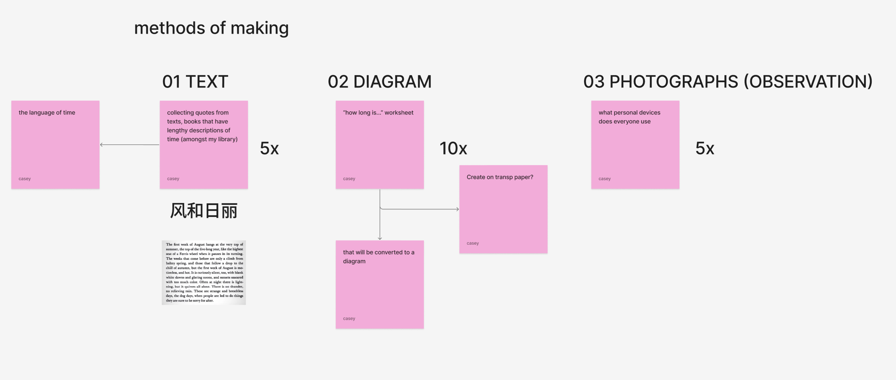
For our next group consultation, we were tasked to gather 20 experiments: makings, gatherings, explorations. I was really inspired by Tess Murdoch's (while writing this, I realised I had been mentioning Tess Bohne all this while, a completely different Tess!) Are.na "blocks" and the lovely article that she wrote about "Felt Time". I was also reading The Silent Language by Edward Hall (go here for my review and analysis!) so I was really inspired by his writings as well.
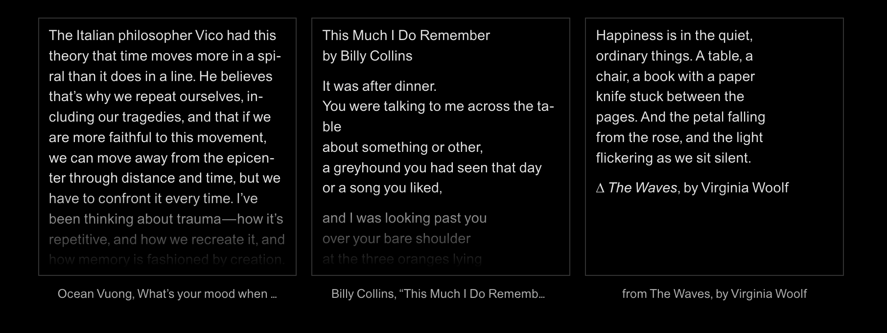
In Tess Murdoch's are.na collection, she gathered snippets of writing that described the experience of time, which I found was very beautiful and captured the ephemeral nature of time perfectly. Most of the passages gathered barely mention the word, "time". Instead, the writers focused on how the passage of time felt.
what it tasted like.
Zoë Lianne, Erasure
From Emily Dickenson to Austin Dickenson
John Berger, to Yasmin Hamdan, Confabulations
GIA: Gathering in action
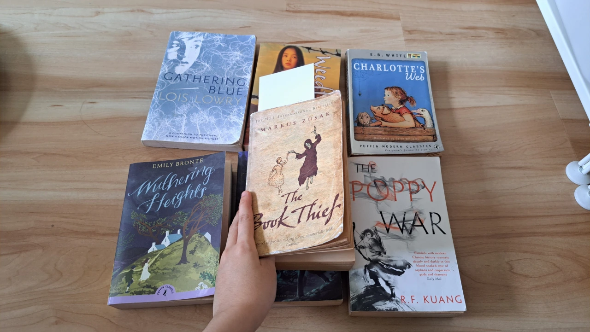
I went to my bookshelf and gathered some books where the author used very descriptive language. I had read most of these books when I was younger (except Wuthering Heights which I haven't read yet). I gathered time-related quotes from these books, and realised that most of these descriptors appeared at the start of the paragraphs, often as an opening statement. Many of the authors also used seasons, or times of day, to indicate to the reader that some time has passed.
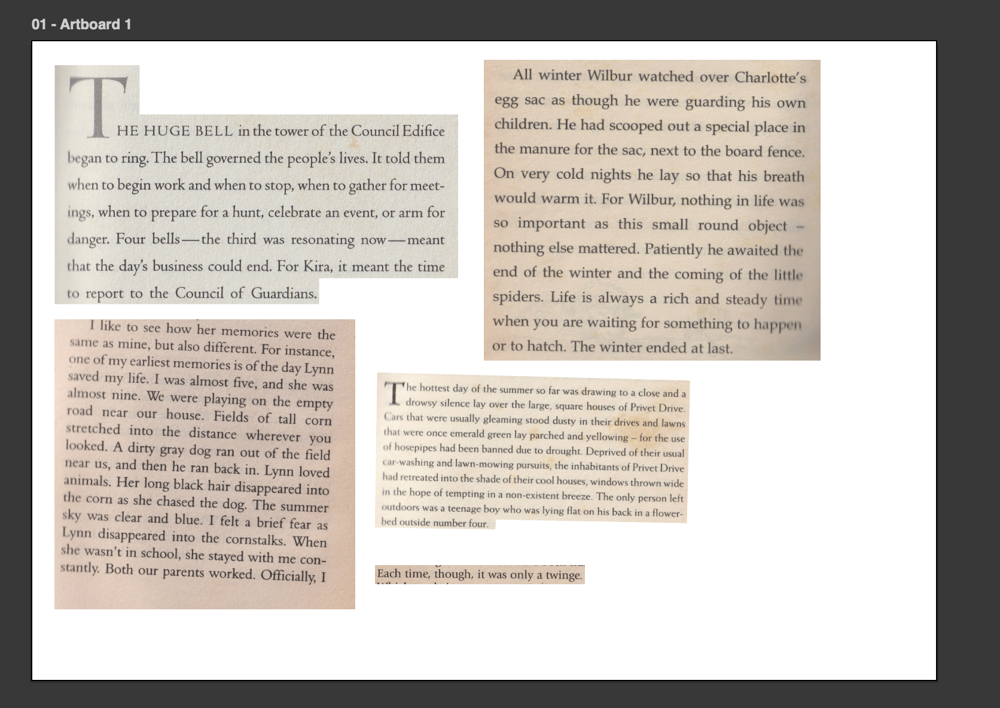
I also thought of gathering thoughts from my friends. Since I'm pivoting towards "felt time", it makes sense to gather some insights on what time feels to them. The challenge was thinking of questions. How can I ask questions that give me good insights to kickstart the project?
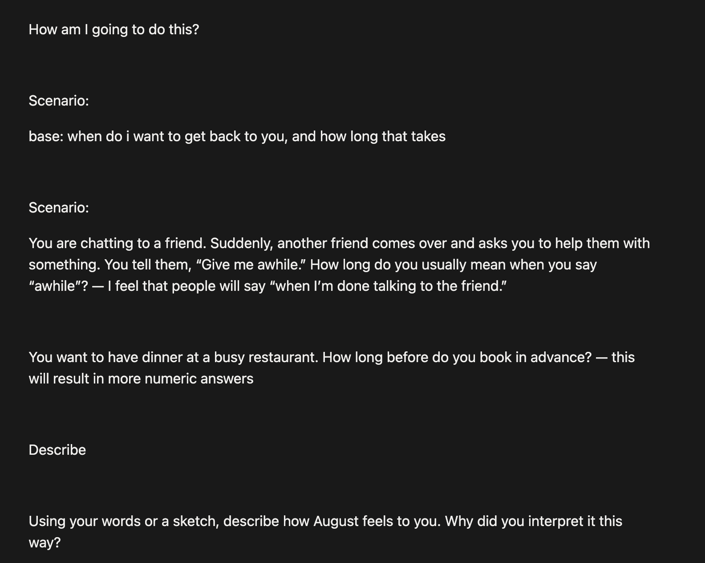
As August had recently passed, they wouldn't have to dig through their memories to reflect on it. It is also an in-between kinda month, a "summer" month but a summery period that is kind of dying away. Anyway, "summer" doesn't really mean anything in Singapore since we live in an eternal summer. I noticed that we don't categorise our school holiday periods by seasons, unlike other countries that experience them.
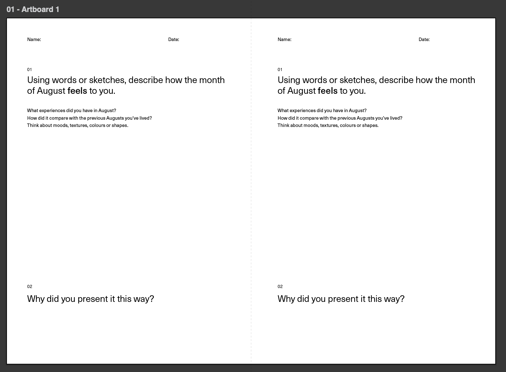
Showcase!
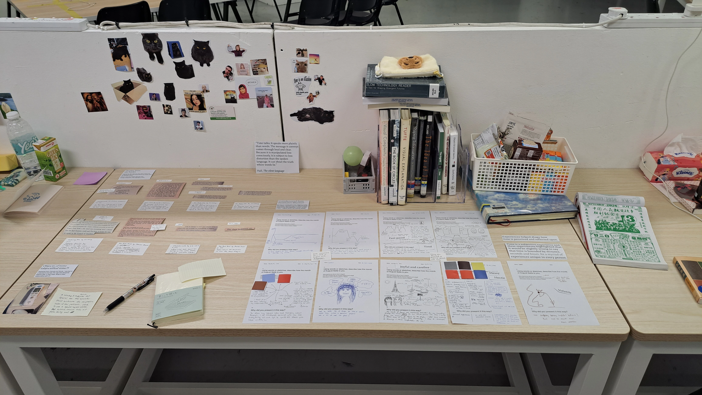
Other than book quotes and the August worksheets, I printed a few quotes from Murdoch and Hall which I helped justify the gathering process. Looking back, while looking at the reflections from my respondents, I realised that perhaps my questions were a little leading. When asking about experiences, I felt that the responses leaned more towards going down the memory lane, rather than how their month felt. Perhaps I could phrase the questions better. I was also surprised to see that many of their visualisation methods echoed one another, particularly the mindmapping and line chart method.
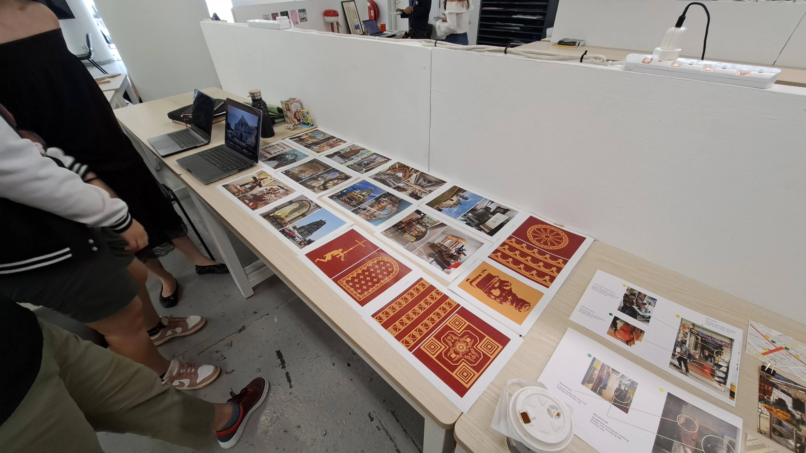
I signed up for a consultation slot with Charlotte and Maeree. Charlotte's sharing consisted of gathering songs played within siam dius, which helps shape the sonic perception and environment. She shared a very interesting detail of how the volume of these songs were purposefully amplified, so that patrons would have to lean in to hear the girls, initiating the intimate experience. I found this very interesting, because many of the songs played were hyperspecific to Singapore's culture, especially in terms of the slang used. There was a whole subculture of Singaporean music that I had no idea existed. The songs were really catchy too. ᕙ( •̀ ᗜ •́ )ᕗ
Maeree shared beautiful shots of walking through the churches as well as some visual elements that she developed from Christian imagery. It was nice to see all the details come to life, and its interesting to think of why Maeree decided to extract some details (the curation process). She also shared a bit about the language that the locals used.
As for my own feedback—
I could think about exploring books of different languages. This is a big ask, but nothing a dictionary and a strong will can't solve. Charlotte also suggested New Moon from the Twilight series where Edward (the vampire) shares his perspective of how immortality feels, especially how he keeps repeating graduations for the fun of it.
I could definitely craft my questions better, and generate more visual examples. Shu Min also suggested including the "Jeremy Bearimy" Calendar from the Good Place.
It would be interesting to see how existing alternative forms of timekeeping (from different cultures), could be linked to this project.

Readings of
the week (╭ರ_•́)
The Silent Language by Edward Hall
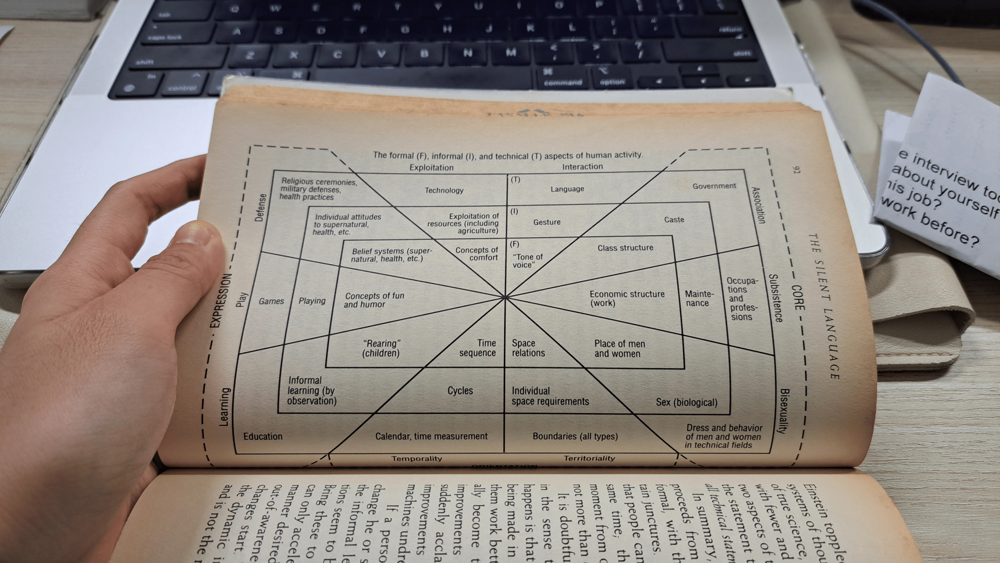
Hall talks about how time "talks". Its importance varies from culture to culture, and this quality is often what defines culture itself.
Electives
We started our electives this week as well. I signed up for Design Writing (which I hope would be helpful for Dissertation) and Computational Design (for prototyping).
Graphic Design Critique
As mentioned in the title of the elective, these lessons would focus on offering a critical angle to graphic design writing. "We could afford to be more critical": Vikas also explains about how the industry suffers if everyone kept being polite; its not exactly constructive if we keep praising a piece of work. Instead it creates echo chambers. We were encouraged to take sides, and not present a "balanced view" throughout this elective. This was something I found different, as we're usually encouraged to explore dual perspectives so that our points seem more credible.
We were then assigned an article to read and analyse before writing a small reflection on it. I was assigned "The Dead Body in Graphic Limbo" by James Langdon. It was an interesting article that talks about how the abstraction of the human bodies in data visualisation takes away the horror of the situation. For instance, how a COVID-19 data visualisation might reduce the human bodies to red dots to indicate (1) death. Read more of my analysis here!
Computational Design
Didn't manage to attend class this week, sorry Andreas! ( ._. )"" But I heard from Pragyaa that it was a session focusing on web-based CPJs, which sounds fun and useful..
I think I'm starting to head in the right direction! Narrowing it down to how time is felt feels like I'm starting to narrow down my topic. Even though it is still not completely specific yet. But at least I no longer have a sinking feeling whenever I think about FYP. It was really fun to look at what my classmates perceived about a specific month in August, so definitely, co-design/participatory design methods was something that I wanted to continue doing. I liked that many of the responses also included interesting tidbits like colours, or even songs.